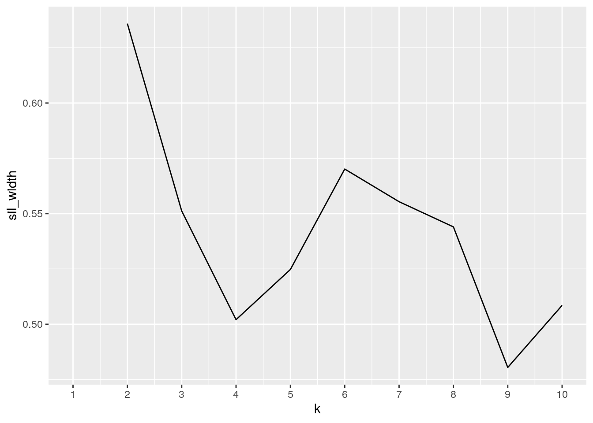

October 3, 2020
By: Zachary Wong zpw97
Introduction
Joining/Merging
library(readr)
library(tidyverse)## ── Attaching packages ────────────────────────────────────────────────────────────────────────────── tidyverse 1.3.0 ──## ✓ ggplot2 3.3.2 ✓ dplyr 1.0.1
## ✓ tibble 3.0.3 ✓ stringr 1.4.0
## ✓ tidyr 1.1.1 ✓ forcats 0.5.0
## ✓ purrr 0.3.4## ── Conflicts ───────────────────────────────────────────────────────────────────────────────── tidyverse_conflicts() ──
## x dplyr::filter() masks stats::filter()
## x dplyr::lag() masks stats::lag()nba_raptor <- read_csv("NBAPlayersRAPTOR.csv")## Parsed with column specification:
## cols(
## .default = col_double(),
## player_name = col_character(),
## player_id = col_character(),
## season_type = col_character(),
## team = col_character()
## )## See spec(...) for full column specifications.nba_salary <- read_csv("NBASalary.csv")## Warning: Missing column names filled in: 'X1' [1]## Parsed with column specification:
## cols(
## X1 = col_double(),
## Player = col_character(),
## `2019/20` = col_character(),
## `2020/21` = col_character(),
## `2021/22` = col_character(),
## `2022/23` = col_character(),
## `2023/24` = col_character(),
## `2024/25` = col_character()
## )glimpse(nba_raptor)## Rows: 808
## Columns: 23
## $ player_name <chr> "Jaylen Adams", "Steven Adams", "Steven Adams", …
## $ player_id <chr> "adamsja01", "adamsst01", "adamsst01", "adebaba0…
## $ season <dbl> 2020, 2020, 2020, 2020, 2020, 2020, 2020, 2020, …
## $ season_type <chr> "PO", "PO", "RS", "PO", "RS", "RS", "RS", "RS", …
## $ team <chr> "POR", "OKC", "OKC", "MIA", "MIA", "SAS", "MIA",…
## $ poss <dbl> 43, 442, 3522, 1165, 4953, 3648, 31, 1288, 1578,…
## $ mp <dbl> 21, 210, 1680, 574, 2417, 1754, 13, 591, 718, 13…
## $ raptor_box_offense <dbl> 2.2588012, -0.9397022, 0.5490096, 1.2567492, -1.…
## $ raptor_box_defense <dbl> 4.05777209, 3.20387694, 1.74107264, 2.73524166, …
## $ raptor_box_total <dbl> 6.3165733, 2.2641748, 2.2900822, 3.9919909, 0.99…
## $ raptor_onoff_offense <dbl> 21.2721947, -8.4328584, 0.9597785, 8.1494464, 2.…
## $ raptor_onoff_defense <dbl> 19.23969721, -5.08691622, 0.91413847, 5.29084927…
## $ raptor_onoff_total <dbl> 40.5118920, -13.5197747, 1.8739170, 13.4402957, …
## $ raptor_offense <dbl> 6.44535510, -2.44678385, 0.66338323, 2.68565468,…
## $ raptor_defense <dbl> 7.5121526, 1.6404810, 1.6587247, 3.4027056, 2.15…
## $ raptor_total <dbl> 13.9575078, -0.8063028, 2.3221080, 6.0883603, 1.…
## $ war_total <dbl> 0.18131137, 0.21347230, 4.32938475, 2.66612910, …
## $ war_reg_season <dbl> 0.00000000, 0.00000000, 4.32938475, 0.00000000, …
## $ war_playoffs <dbl> 0.18131137, 0.21347230, 0.00000000, 2.66612910, …
## $ predator_offense <dbl> 4.39129961, -4.48430526, 0.05522584, 5.82818495,…
## $ predator_defense <dbl> 3.3757170, -0.9360893, 1.9478919, 2.8750117, 1.3…
## $ predator_total <dbl> 7.7670166, -5.4203946, 2.0031178, 8.7031967, 0.9…
## $ pace_impact <dbl> -1.78413139, -0.60702096, -0.42512985, -0.126695…glimpse(nba_salary)## Rows: 581
## Columns: 8
## $ X1 <dbl> 1, 2, 2, 4, 4, 6, 7, 8, 9, 10, 11, 11, 11, 11, 11, 16, 17, …
## $ Player <chr> "Stephen Curry", "Russell Westbrook", "Chris Paul", "James …
## $ `2019/20` <chr> "$40,231,758", "$38,506,482", "$38,506,482", "$38,199,000",…
## $ `2020/21` <chr> "$43,006,362", "$41,358,814", "$41,358,814", "$41,254,920",…
## $ `2021/22` <chr> "$45,780,966", "$44,211,146", "$44,211,146", "$44,310,840",…
## $ `2022/23` <chr> "$0", "$47,063,478", "$0", "$47,366,760", "$47,366,760", "$…
## $ `2023/24` <chr> "$0", "$0", "$0", "$0", "$0", "$0", "$0", "$0", "$0", "$0",…
## $ `2024/25` <chr> "$0", "$0", "$0", "$0", "$0", "$0", "$0", "$0", "$0", "$0",…raptor <- nba_raptor %>% filter(mp >= 1400) %>% select(player_name, team, mp, raptor_offense, raptor_defense, raptor_total)
glimpse(raptor)## Rows: 156
## Columns: 6
## $ player_name <chr> "Steven Adams", "Bam Adebayo", "LaMarcus Aldridge", "J…
## $ team <chr> "OKC", "MIA", "SAS", "BRK", "MIL", "POR", "TOR", "ORL"…
## $ mp <dbl> 1680, 2417, 1754, 1852, 1917, 1902, 2066, 1420, 2025, …
## $ raptor_offense <dbl> 0.66338323, -0.56090305, -0.66144083, 0.02730606, 5.46…
## $ raptor_defense <dbl> 1.6587247, 2.1503766, 0.7815816, 2.0876539, 3.8746785,…
## $ raptor_total <dbl> 2.3221080, 1.5894735, 0.1201407, 2.1149599, 9.3405204,…salary <- nba_salary %>% select(Player,`2019/20`,`2020/21`)
salary <- salary %>% rename("2019/20 Salary"="2019/20","2020/21 Salary"="2020/21")
glimpse(salary)## Rows: 581
## Columns: 3
## $ Player <chr> "Stephen Curry", "Russell Westbrook", "Chris Paul", …
## $ `2019/20 Salary` <chr> "$40,231,758", "$38,506,482", "$38,506,482", "$38,19…
## $ `2020/21 Salary` <chr> "$43,006,362", "$41,358,814", "$41,358,814", "$41,25…NBA <- raptor %>% inner_join(salary, by=c('player_name'='Player'))
NBA <- NBA %>% rename("player"="player_name")
NBA$`2019/20 Salary` = as.numeric(gsub("[\\$,]", "", NBA$`2019/20 Salary`))
NBA$`2020/21 Salary` = as.numeric(gsub("[\\$,]", "", NBA$`2020/21 Salary`))
glimpse(NBA)## Rows: 141
## Columns: 8
## $ player <chr> "Steven Adams", "Bam Adebayo", "LaMarcus Aldridge", …
## $ team <chr> "OKC", "MIA", "SAS", "BRK", "MIL", "POR", "TOR", "NO…
## $ mp <dbl> 1680, 2417, 1754, 1852, 1917, 1902, 2066, 2025, 2482…
## $ raptor_offense <dbl> 0.66338323, -0.56090305, -0.66144083, 0.02730606, 5.…
## $ raptor_defense <dbl> 1.6587247, 2.1503766, 0.7815816, 2.0876539, 3.874678…
## $ raptor_total <dbl> 2.3221080, 1.5894735, 0.1201407, 2.1149599, 9.340520…
## $ `2019/20 Salary` <dbl> 25842697, 3454080, 26000000, 2376840, 25842697, 2159…
## $ `2020/21 Salary` <dbl> 27528088, 5115492, 24000000, 3909902, 27528088, 0, 3…The two datasets "raptor" and "salary" were joined to form a merged dataset called "NBA" using the dplyr join function of inner_join, which kept only the rows that have a match for the ID variable. The ID variable in this case is the name of the NBA player. I chose this join because it keeps all the data from both datasets as long as it had a match for player name. The "raptor" dataset included all players with 1400 or more minutes played in the 2020 season. This limited the observations to a manageable amount of 156 observations of 6 variables. The "salary" dataset included all NBA players with active contracts. This dataset had a total of 581 observations of 3 variables. Even though there were originally more observations in "salary", only observations that had matches in the "raptor" dataset were included. This resulted in 141 observations (NBA players) of 8 variables: player, team, mp (minutes played), raptor_offense, raptor_defense, raptor_total, 2019/20 Salary, and 2020/21 Salary. The cases that were dropped were those that did not have matches in both datasets, meaning that the NBA player was included in one of the datasets (either raptor or salary) but not the other. A reason for them not being included in both datasets is that they did not play more than 1400 minutes during the season and/or do not have an active contract with a salary. A potential problem is that the entirety of the NBA is not included in the project, meaning that the trends found by the selected statistics included in this problem may not be representative of the entire population (the NBA).
Wrangling with dplyr functions
NBA <- NBA %>% mutate("2019/20 Salary/Min" = `2019/20 Salary`/mp)
NBA1 <- NBA %>% rename("minutes_played"="mp")
NBA1 %>% filter(team == "SAS")## # A tibble: 6 x 9
## player team minutes_played raptor_offense raptor_defense raptor_total
## <chr> <chr> <dbl> <dbl> <dbl> <dbl>
## 1 LaMar… SAS 1754 -0.661 0.782 0.120
## 2 DeMar… SAS 2316 2.77 -2.67 0.0980
## 3 Bryn … SAS 1579 0.0113 -3.39 -3.37
## 4 Rudy … SAS 1461 -1.07 0.937 -0.133
## 5 Dejou… SAS 1687 -0.452 -0.125 -0.577
## 6 Derri… SAS 1677 1.21 2.19 3.40
## # … with 3 more variables: `2019/20 Salary` <dbl>, `2020/21 Salary` <dbl>,
## # `2019/20 Salary/Min` <dbl>NBA1 %>% filter(team == "SAS") %>% select(player,raptor_total,`2019/20 Salary`, `2019/20 Salary/Min`)## # A tibble: 6 x 4
## player raptor_total `2019/20 Salary` `2019/20 Salary/Min`
## <chr> <dbl> <dbl> <dbl>
## 1 LaMarcus Aldridge 0.120 26000000 14823.
## 2 DeMar DeRozan 0.0980 27739975 11978.
## 3 Bryn Forbes -3.37 2875000 1821.
## 4 Rudy Gay -0.133 14500000 9925.
## 5 Dejounte Murray -0.577 2321735 1376.
## 6 Derrick White 3.40 1948080 1162.NBA1 %>% filter(team == "SAS") %>% select(player,raptor_total,`2019/20 Salary`, `2019/20 Salary/Min`) %>% arrange(-raptor_total)## # A tibble: 6 x 4
## player raptor_total `2019/20 Salary` `2019/20 Salary/Min`
## <chr> <dbl> <dbl> <dbl>
## 1 Derrick White 3.40 1948080 1162.
## 2 LaMarcus Aldridge 0.120 26000000 14823.
## 3 DeMar DeRozan 0.0980 27739975 11978.
## 4 Rudy Gay -0.133 14500000 9925.
## 5 Dejounte Murray -0.577 2321735 1376.
## 6 Bryn Forbes -3.37 2875000 1821.NBA1 %>% group_by(team) %>% summarize(mean_raptor_total=mean(raptor_total), sd_raptor_total=sd(raptor_total))## `summarise()` ungrouping output (override with `.groups` argument)## # A tibble: 30 x 3
## team mean_raptor_total sd_raptor_total
## <chr> <dbl> <dbl>
## 1 ATL -1.47 3.48
## 2 BOS 2.66 1.84
## 3 BRK -0.169 1.76
## 4 CHA -2.60 0.684
## 5 CHI -1.53 1.46
## 6 CLE -2.56 2.51
## 7 DAL 1.68 2.57
## 8 DEN 0.814 2.84
## 9 DET -0.617 0.909
## 10 GSW -2.43 2.46
## # … with 20 more rowsSummary statistics
NBA1 %>% group_by(team) %>% summarize_if(is.numeric,list(mean=mean,sd=sd)) %>% mutate_if(is.numeric, round) %>% pivot_longer(-1) %>% pivot_wider(names_from=team,values_from="value")## # A tibble: 14 x 31
## name ATL BOS BRK CHA CHI CLE DAL DEN DET
## <chr> <dbl> <dbl> <dbl> <dbl> <dbl> <dbl> <dbl> <dbl> <dbl>
## 1 minu… 1862 1.86e3 1.91e3 2.08e3 1.74e3 1.88e3 1.84e3 1.91e3 1.66e3
## 2 rapt… 0 2.00e0 0. -1.00e0 -1.00e0 -1.00e0 2.00e0 1.00e0 -1.00e0
## 3 rapt… -2 1.00e0 0. -2.00e0 -1.00e0 -2.00e0 0. 0. 0.
## 4 rapt… -1 3.00e0 0. -3.00e0 -2.00e0 -3.00e0 2.00e0 1.00e0 -1.00e0
## 5 2019… 5055840 1.62e7 5.78e6 1.18e7 1.06e7 1.23e7 1.07e7 1.22e7 1.18e7
## 6 2020… 5303430 2.00e7 6.52e6 1.14e7 1.11e7 1.04e7 1.11e7 1.71e7 1.06e7
## 7 2019… 2674 9.03e3 2.97e3 5.54e3 5.90e3 6.86e3 5.95e3 6.12e3 7.12e3
## 8 minu… 257 2.40e2 1.51e2 1.20e2 2.38e2 1.65e2 2.31e2 2.34e2 3.10e1
## 9 rapt… 5 2.00e0 2.00e0 1.00e0 2.00e0 2.00e0 3.00e0 2.00e0 1.00e0
## 10 rapt… 1 1.00e0 2.00e0 0. 1.00e0 2.00e0 2.00e0 2.00e0 2.00e0
## 11 rapt… 3 2.00e0 2.00e0 1.00e0 1.00e0 3.00e0 3.00e0 3.00e0 1.00e0
## 12 2019… 2003520 1.30e7 3.34e6 1.14e7 5.94e6 1.11e7 8.35e6 9.46e6 1.10e7
## 13 2020… 2103261 1.26e7 5.22e6 1.06e7 5.64e6 1.21e7 9.17e6 1.10e7 1.32e7
## 14 2019… 848 7.67e3 1.58e3 5.17e3 2.74e3 6.42e3 4.66e3 4.24e3 6.65e3
## # … with 21 more variables: GSW <dbl>, HOU <dbl>, IND <dbl>, LAC <dbl>,
## # LAL <dbl>, MEM <dbl>, MIA <dbl>, MIL <dbl>, MIN <dbl>, NOP <dbl>,
## # NYK <dbl>, OKC <dbl>, ORL <dbl>, PHI <dbl>, PHO <dbl>, POR <dbl>,
## # SAC <dbl>, SAS <dbl>, TOR <dbl>, UTA <dbl>, WAS <dbl>NBA1 %>% summarize_all(n_distinct)## # A tibble: 1 x 9
## player team minutes_played raptor_offense raptor_defense raptor_total
## <int> <int> <int> <int> <int> <int>
## 1 141 30 130 141 141 141
## # … with 3 more variables: `2019/20 Salary` <int>, `2020/21 Salary` <int>,
## # `2019/20 Salary/Min` <int>NBA1 %>% group_by(team) %>% summarize_all(n_distinct) %>% select(-player)## # A tibble: 30 x 8
## team minutes_played raptor_offense raptor_defense raptor_total
## <chr> <int> <int> <int> <int>
## 1 ATL 4 4 4 4
## 2 BOS 6 6 6 6
## 3 BRK 5 5 5 5
## 4 CHA 2 2 2 2
## 5 CHI 5 5 5 5
## 6 CLE 5 5 5 5
## 7 DAL 6 6 6 6
## 8 DEN 6 6 6 6
## 9 DET 4 4 4 4
## 10 GSW 3 3 3 3
## # … with 20 more rows, and 3 more variables: `2019/20 Salary` <int>, `2020/21
## # Salary` <int>, `2019/20 Salary/Min` <int>NBA1 %>% summarize_if(is.numeric, mean)## # A tibble: 1 x 7
## minutes_played raptor_offense raptor_defense raptor_total `2019/20 Salary`
## <dbl> <dbl> <dbl> <dbl> <dbl>
## 1 1867. 0.776 -0.0558 0.720 12892397.
## # … with 2 more variables: `2020/21 Salary` <dbl>, `2019/20 Salary/Min` <dbl>NBA1 %>% group_by(team) %>% summarize_if(is.numeric,mean)## # A tibble: 30 x 8
## team minutes_played raptor_offense raptor_defense raptor_total
## <chr> <dbl> <dbl> <dbl> <dbl>
## 1 ATL 1862. 0.313 -1.78 -1.47
## 2 BOS 1861 1.93 0.728 2.66
## 3 BRK 1911. 0.109 -0.277 -0.169
## 4 CHA 2080. -1.03 -1.57 -2.60
## 5 CHI 1744 -0.708 -0.818 -1.53
## 6 CLE 1876. -0.582 -1.98 -2.56
## 7 DAL 1836. 1.66 0.0222 1.68
## 8 DEN 1911. 0.825 -0.0110 0.814
## 9 DET 1658. -0.854 0.237 -0.617
## 10 GSW 1531 -0.877 -1.55 -2.43
## # … with 20 more rows, and 3 more variables: `2019/20 Salary` <dbl>, `2020/21
## # Salary` <dbl>, `2019/20 Salary/Min` <dbl>NBA1 %>% filter(team=="SAS") %>% summarize_if(is.numeric,mean) %>% select(-minutes_played)## # A tibble: 1 x 6
## raptor_offense raptor_defense raptor_total `2019/20 Salary` `2020/21 Salary`
## <dbl> <dbl> <dbl> <dbl> <dbl>
## 1 0.301 -0.378 -0.0770 12564132. 14007043.
## # … with 1 more variable: `2019/20 Salary/Min` <dbl>NBA1 %>% summarize_if(is.numeric,sd)## # A tibble: 1 x 7
## minutes_played raptor_offense raptor_defense raptor_total `2019/20 Salary`
## <dbl> <dbl> <dbl> <dbl> <dbl>
## 1 281. 2.35 1.96 2.99 10813225.
## # … with 2 more variables: `2020/21 Salary` <dbl>, `2019/20 Salary/Min` <dbl>NBA1 %>% group_by(team) %>% summarize_if(is.numeric,sd)## # A tibble: 30 x 8
## team minutes_played raptor_offense raptor_defense raptor_total
## <chr> <dbl> <dbl> <dbl> <dbl>
## 1 ATL 257. 4.63 1.43 3.48
## 2 BOS 240. 2.02 1.35 1.84
## 3 BRK 151. 2.23 1.74 1.76
## 4 CHA 120. 0.597 0.0865 0.684
## 5 CHI 238. 1.50 1.21 1.46
## 6 CLE 165. 1.93 2.32 2.51
## 7 DAL 231. 3.15 1.52 2.57
## 8 DEN 234. 2.37 1.74 2.84
## 9 DET 30.6 1.44 2.11 0.909
## 10 GSW 116. 0.468 2.00 2.46
## # … with 20 more rows, and 3 more variables: `2019/20 Salary` <dbl>, `2020/21
## # Salary` <dbl>, `2019/20 Salary/Min` <dbl>NBA1 %>% summarize_if(is.numeric,var)## # A tibble: 1 x 7
## minutes_played raptor_offense raptor_defense raptor_total `2019/20 Salary`
## <dbl> <dbl> <dbl> <dbl> <dbl>
## 1 79196. 5.52 3.85 8.96 116925829393985.
## # … with 2 more variables: `2020/21 Salary` <dbl>, `2019/20 Salary/Min` <dbl>NBA1 %>% group_by(team) %>% summarize_if(is.numeric,var) %>% arrange(desc(raptor_total))## # A tibble: 30 x 8
## team minutes_played raptor_offense raptor_defense raptor_total
## <chr> <dbl> <dbl> <dbl> <dbl>
## 1 HOU 176477. 16.3 4.39 34.0
## 2 POR 204204. 19.2 5.29 27.0
## 3 LAC 45738 10.0 6.30 25.3
## 4 WAS 101850. 15.4 2.66 17.6
## 5 LAL 107372. 9.86 2.94 15.3
## 6 NYK 112144 2.43 4.35 13.2
## 7 ATL 66008. 21.5 2.05 12.1
## 8 MIL 23567. 8.11 1.67 8.41
## 9 MIA 108520. 4.16 2.46 8.09
## 10 DEN 54769. 5.61 3.03 8.08
## # … with 20 more rows, and 3 more variables: `2019/20 Salary` <dbl>, `2020/21
## # Salary` <dbl>, `2019/20 Salary/Min` <dbl>NBA1 %>% summarize_if(is.numeric,list(min=min,max=max)) ## # A tibble: 1 x 14
## minutes_played_… raptor_offense_… raptor_defense_… raptor_total_min
## <dbl> <dbl> <dbl> <dbl>
## 1 1411 -2.95 -4.65 -6.55
## # … with 10 more variables: `2019/20 Salary_min` <dbl>, `2020/21
## # Salary_min` <dbl>, `2019/20 Salary/Min_min` <dbl>,
## # minutes_played_max <dbl>, raptor_offense_max <dbl>,
## # raptor_defense_max <dbl>, raptor_total_max <dbl>, `2019/20
## # Salary_max` <dbl>, `2020/21 Salary_max` <dbl>, `2019/20
## # Salary/Min_max` <dbl>NBA1 %>% group_by(team) %>% summarize_if(is.numeric, list(min=min,max=max)) %>% mutate_if(is.numeric,round) %>% pivot_longer(-1)## # A tibble: 420 x 3
## team name value
## <chr> <chr> <dbl>
## 1 ATL minutes_played_min 1551
## 2 ATL raptor_offense_min -3
## 3 ATL raptor_defense_min -3
## 4 ATL raptor_total_min -4
## 5 ATL 2019/20 Salary_min 2636280
## 6 ATL 2020/21 Salary_min 2761920
## 7 ATL 2019/20 Salary/Min_min 1498
## 8 ATL minutes_played_max 2120
## 9 ATL raptor_offense_max 7
## 10 ATL raptor_defense_max 0
## # … with 410 more rowsNBA1 %>% summarize_if(is.numeric, list(Q3=quantile), probs=.75)## # A tibble: 1 x 7
## minutes_played_… raptor_offense_… raptor_defense_… raptor_total_Q3
## <dbl> <dbl> <dbl> <dbl>
## 1 2066 1.64 1.55 2.32
## # … with 3 more variables: `2019/20 Salary_Q3` <dbl>, `2020/21
## # Salary_Q3` <dbl>, `2019/20 Salary/Min_Q3` <dbl>NBA1 %>% group_by(team) %>% summarize_if(is.numeric, list(Q3=quantile), probs=.75) %>% mutate_if(is.numeric,round) %>% pivot_longer(-1)## # A tibble: 210 x 3
## team name value
## <chr> <chr> <dbl>
## 1 ATL minutes_played_Q3 2044
## 2 ATL raptor_offense_Q3 1
## 3 ATL raptor_defense_Q3 -1
## 4 ATL raptor_total_Q3 -1
## 5 ATL 2019/20 Salary_Q3 6471840
## 6 ATL 2020/21 Salary_Q3 6784350
## 7 ATL 2019/20 Salary/Min_Q3 3095
## 8 BOS minutes_played_Q3 1930
## 9 BOS raptor_offense_Q3 3
## 10 BOS raptor_defense_Q3 2
## # … with 200 more rowsNBA1 %>% summarize(count=n())## # A tibble: 1 x 1
## count
## <int>
## 1 141NBA1 %>% group_by(team) %>% summarize(count=n())## `summarise()` ungrouping output (override with `.groups` argument)## # A tibble: 30 x 2
## team count
## <chr> <int>
## 1 ATL 4
## 2 BOS 6
## 3 BRK 5
## 4 CHA 2
## 5 CHI 5
## 6 CLE 5
## 7 DAL 6
## 8 DEN 6
## 9 DET 4
## 10 GSW 3
## # … with 20 more rowscorNBA <- NBA1 %>% select(-1,-2) %>% cor
corNBA## minutes_played raptor_offense raptor_defense raptor_total
## minutes_played 1.00000000 0.42583105 -0.01167852 0.3264323
## raptor_offense 0.42583105 1.00000000 -0.04356586 0.7560018
## raptor_defense -0.01167852 -0.04356586 1.00000000 0.6210122
## raptor_total 0.32643229 0.75600180 0.62101219 1.0000000
## 2019/20 Salary 0.32373036 0.47603524 0.20194249 0.5057825
## 2020/21 Salary 0.39783573 0.45595705 0.19572474 0.4859564
## 2019/20 Salary/Min 0.13329432 0.39882577 0.22876021 0.4627788
## 2019/20 Salary 2020/21 Salary 2019/20 Salary/Min
## minutes_played 0.3237304 0.3978357 0.1332943
## raptor_offense 0.4760352 0.4559571 0.3988258
## raptor_defense 0.2019425 0.1957247 0.2287602
## raptor_total 0.5057825 0.4859564 0.4627788
## 2019/20 Salary 1.0000000 0.8297910 0.9690258
## 2020/21 Salary 0.8297910 1.0000000 0.7821195
## 2019/20 Salary/Min 0.9690258 0.7821195 1.0000000corNBA <- corNBA %>% as.data.frameThe merged NBA dataset was first mutated to create a ninth variable that was a function of the "2019/20 Salary" variable divided by the "minutes_played" variable. The new variable is the NBA players' 2019/20 Salary per minute and is called "2019/20 Salary/Min". This new dataset was filtered (using the dplyr "filter" function) to only show the data for players on the San Antonio Spurs team. There were 6 SAS players. This filtered dataset was then reduced to only some of the dataset's variables using the dplyr "select" function and then arranged in descending order of total raptor score using the dplyr "arrange" function. It was revealed that Derrick White, the Spurs player with the highest total RAPTOR score, had the lowest salary in 2019/20. This was not a direct correlation however, as Demar Derozan, the Spurs player with the highest salary in 2019/20, had the third highest total RAPTOR score. The dataset was finally grouped by team and summarized, using the dplyr "summarize" function, to give the mean and standard deviation of each NBA teams' (made up of players/observations) overall RAPTOR scores. The team with the highest mean total RAPTOR score was the Los Angeles Clippers (LAC, 4.8 points) and the team with the highest standard deviation was the Houston Rockets (HOU, 5.8 points).
Visualizing
tidycorNBA <- corNBA %>% rownames_to_column("Variable1") %>% pivot_longer(-1, names_to = "Variable2",values_to="correlation")
tidycorNBA %>% ggplot(aes(Variable1,Variable2, fill=correlation)) + labs(fill="Correlation\nCoefficient") + geom_tile() + scale_fill_gradient2(low="red",mid="white",high="blue") + geom_text(aes(label=round(correlation,2)), color = "black", size=3) + theme(axis.text.x = element_text(angle = 45, hjust = 1)) + coord_fixed() + ggtitle("Correlation Heatmap") + xlab("Variable 1") + ylab("Variable 2") + theme(plot.title = element_text(hjust = 0.5))NBAusage <- NBA1 %>% mutate(MinutesPlayed_cat = case_when(minutes_played>2100 ~ "high usage", minutes_played<=2100 & minutes_played>=1800 ~ "medium usage", minutes_played<1800 ~ "low usage"))
glimpse(NBAusage)## Rows: 141
## Columns: 10
## $ player <chr> "Steven Adams", "Bam Adebayo", "LaMarcus Aldridg…
## $ team <chr> "OKC", "MIA", "SAS", "BRK", "MIL", "POR", "TOR",…
## $ minutes_played <dbl> 1680, 2417, 1754, 1852, 1917, 1902, 2066, 2025, …
## $ raptor_offense <dbl> 0.66338323, -0.56090305, -0.66144083, 0.02730606…
## $ raptor_defense <dbl> 1.6587247, 2.1503766, 0.7815816, 2.0876539, 3.87…
## $ raptor_total <dbl> 2.3221080, 1.5894735, 0.1201407, 2.1149599, 9.34…
## $ `2019/20 Salary` <dbl> 25842697, 3454080, 26000000, 2376840, 25842697, …
## $ `2020/21 Salary` <dbl> 27528088, 5115492, 24000000, 3909902, 27528088, …
## $ `2019/20 Salary/Min` <dbl> 15382.5577, 1429.0774, 14823.2611, 1283.3909, 13…
## $ MinutesPlayed_cat <chr> "low usage", "high usage", "low usage", "medium …TX <- NBAusage %>% filter(team == "HOU" | team == "DAL" | team =="SAS")
TX %>% ggplot(aes(raptor_offense,raptor_defense,color=team,shape=MinutesPlayed_cat)) + labs(color="Mean RAPTOR\nScore (points)", shape = "Player Usage\n(minutes played)") + geom_point(size=4) + ggtitle("Offensive vs. Defensive RAPTOR Scores for NBA Players in Texas") + xlab("Offensive RAPTOR Score (points)") + ylab("Defensive RAPTOR Score (points)") + scale_y_continuous(breaks = seq(-4,3)) + scale_x_continuous(breaks = seq(-3,9)) + theme(panel.background = element_rect(fill = "light blue"))TX %>% ggplot(aes(raptor_offense,raptor_total,color=team,shape=MinutesPlayed_cat)) + labs(color="Mean RAPTOR\nScore (points)", shape = "Player Usage\n(minutes played)") + geom_point(size=4) + ggtitle("Offensive vs. Overall RAPTOR Scores for NBA Players in Texas") + xlab("Offensive RAPTOR Score (points)") + ylab("Overall RAPTOR Score (points)") + scale_y_continuous(breaks = seq(-4,11)) + scale_x_continuous(breaks = seq(-3,9)) + theme(panel.background = element_rect(fill = "light blue"))NBA1 %>% group_by(team) %>% summarize(mean_salary = mean(`2019/20 Salary`), mean_raptor = mean(raptor_total)) %>% ggplot(aes(team,mean_salary,fill=mean_raptor)) + labs(fill="Mean RAPTOR \nScore (points)") + geom_bar(stat = "summary") + theme_linedraw() + theme(axis.text.x = element_text(angle = 75, hjust = 1)) + ggtitle("Mean Salary and Raptor Score by NBA Team") + ylab("Mean Salary (dollars)") + xlab("NBA Team") + scale_fill_gradient2(low="red",mid="purple",high="blue")## `summarise()` ungrouping output (override with `.groups` argument)## No summary function supplied, defaulting to `mean_se()`Figure 1: Correlation Heatmap
The first visualization of this project is a correlation heatmap of the 7 numeric variables of the NBA dataset. The numeric variables are listed on both the x and y axes and have specific correlation coefficient values, shown in colored squares/tiles, for each relationship between two variables. The legend to the right of the graph shows a continuum of colors starting at white, indicating no correlation (coefficient = 0), and ending at dark blue, indicating a perfect correlation (coefficient = 1). Perfect correlations were only seen between the same variable on different axes and were represented as a dark blue colored tile. The majority of the correlation tiles were purple, indicating a positive correlation between variables. The more white a tile appears indicates a correlation coefficient of 0 and no correlation.
The correlation heatmap shows that the strongest correlations (not including the same variables) were observed between the salary variables. The 2019/20 Salary and 2019/20 Salary/Min variables had a coefficient of 0.97, the 2019/20 Salary and 2020/21 Salary variables had a coefficient of 0.83, and the 2019/20 Salary/Min and 2020/21 Salary variables had a coefficient of 0.78. Relatively high correlations were shown between raptor_total and raptor_offense (0.76) as well as raptor_total and raptor_defense (0.62). The lowest correlations were between raptor_offense and raptor_defense with a coefficient of -0.04 and raptor_defense and minutes_played with a coefficient of -0.01.
Figure 2: Scatterplot
The second visualization of this project is a scatterplot displaying the relationship between offensive RAPTOR score and defensive RAPTOR score for NBA players on either the Dallas Mavericks (DAL), Houston Rockets (HOU), or San Antonio Spurs (SAS). These three teams are located within Texas and altogether make up a total of 16 players of the dataset. Each data point is colored by their team and shaped by the range of the number of minutes they played throughout this past season. Players who played more than 2100 minutes were considered high usage, 1800-2100 minutes were considered medium usage, and less than 1800 minutes were considered low usage. The data indicates nearly no correlation between offensive and defensive RAPTOR scores. Additionally there is no clear relationship between teams or player usage. Some potential results can be seen however. It does seem that SAS players have relatively lower offensive RAPTOR scores but relatively higher defensive RAPTOR scores. This same relationship of lower offensive RAPTOR scores and higher defensive RAPTOR scores is seen in low usage players. There does not appear to be a clear correlation between player usage (minutes played) and total RAPTOR score, and due to the fact that minutes_played was converted into a categorical variable, it is even harder to see a correlation because the exact minutes played values are not used.
Figure 3: Scatterplot (part 2)
The third visualization of this project is another scatterplot that displays the relationship between offensive RAPTOR score and overall RAPTOR score for NBA players on the following teams located in Texas: DAL, HOU, and SAS. This scatterplot is the same design as the previous plot, but replaces defensive RAPTOR with total RAPTOR on the y-axis. Total RAPTOR was indicated to have a relatively high correlation coefficient with offensive RAPTOR. Likewise, the data points are colored by team and shaped by player usage (minutes played). This scatterplot indicates a clear positive correlation between offensive RAPTOR scores and total RAPTOR scores, based on data points that appear diagonal as both variables increase or vice versa. All SAS players have offensive and total RAPTOR scores around 3 or less, while HOU and DAL players are more spread out. In the cases of HOU and DAL, each team has one player who has significantly higher RAPTOR scores than the rest. This could indicate that HOU and DAL have star players, while SAS does not have as clear of a star player. All high usage players have RAPTOR scores greater than 0 for both variables, whereas medium and low usage players both have some players below 0. This indicates potential that players with more minutes may have higher offensive and total RAPTOR scores.
Figure 4: Bar Graph
The fourth visualization of this project is a bar graph displaying the mean salary of the players on each NBA team. The thirty NBA teams are displayed on the x-axis, the teams' mean 2019/20 salaries are displayed on the y-axis, and the teams' mean total RAPTOR scores are displayed by the color of the bar. The legend shows that mean total RAPTOR scores are colored on a continuum from red to purple to blue as RAPTOR increases. The bar graph shows a small, positive correlation between salary and total RAPTOR. It appears as though teams with much lower relative mean salaries have relatively lower mean total RAPTOR scores. The teams with the highest mean total RAPTOR scores do not have the highest mean salaries, but do have relatively higher salaries than most teams. This of course is different than the correlation data from previous figures due to the fact that the observations were grouped and averaged into their teams. OKC appears to have the highest mean salary but only an intermediate total RAPTOR score, whereas GSW appears to have the lowest mean salary but also appears to have a very low mean total RAPTOR score.
K-means/PAM clustering
NBA2 <- NBA1 %>% select(-1,-2)
kmeansNBA <- NBA2 %>% kmeans(2)
kmeansNBA## K-means clustering with 2 clusters of sizes 40, 101
##
## Cluster means:
## minutes_played raptor_offense raptor_defense raptor_total 2019/20 Salary
## 1 2017.800 2.1392463 0.5389244 2.67817067 27401552
## 2 1806.743 0.2359921 -0.2913590 -0.05536691 7146197
## 2020/21 Salary 2019/20 Salary/Min
## 1 28915288 13857.271
## 2 7361190 3999.261
##
## Clustering vector:
## [1] 1 2 1 2 1 2 2 2 1 2 2 1 2 2 2 2 2 1 2 2 1 2 2 2 1 2 2 2 2 1 1 2 2 2 2 1 1
## [38] 2 2 2 2 2 2 2 2 2 1 2 1 1 2 2 2 1 2 1 2 1 2 1 2 2 2 1 2 1 2 2 2 2 2 1 1 2
## [75] 2 2 2 1 2 1 1 2 1 1 2 2 1 2 1 2 2 2 2 2 2 2 2 2 2 1 1 2 2 1 2 2 2 2 2 2 2
## [112] 2 1 2 2 2 2 2 2 2 1 2 2 2 2 2 2 2 1 2 2 1 1 1 2 2 2 1 2 2 2
##
## Within cluster sum of squares by cluster:
## [1] 3.168002e+15 7.188034e+15
## (between_SS / total_SS = 70.8 %)
##
## Available components:
##
## [1] "cluster" "centers" "totss" "withinss" "tot.withinss"
## [6] "betweenss" "size" "iter" "ifault"library(cluster)
sil_width<-vector()
for(i in 2:10){
kms <- kmeans(NBA2,centers=i)
sil <- silhouette(kms$cluster,dist(NBA2))
sil_width[i]<-mean(sil[,3])
}
ggplot()+geom_line(aes(x=1:10,y=sil_width))+scale_x_continuous(name="k",breaks=1:10)## Warning: Removed 1 row(s) containing missing values (geom_path).
pam1 <- NBA2 %>% scale %>% pam(k=2)
pam1## Medoids:
## ID minutes_played raptor_offense raptor_defense raptor_total
## [1,] 84 0.8222068 0.8998511 0.5967667 1.0969709
## [2,] 26 -0.3717509 -0.4717736 -0.1120392 -0.4435351
## 2019/20 Salary 2020/21 Salary 2019/20 Salary/Min
## [1,] 1.8869393 1.459302 1.6317672
## [2,] -0.4441889 -0.427061 -0.3964758
## Clustering vector:
## [1] 1 2 1 2 1 2 2 2 1 2 2 1 2 2 2 2 2 1 2 2 2 2 2 2 1 2 2 2 2 1 1 2 2 2 2 1 1
## [38] 2 2 2 2 2 2 2 2 2 1 2 1 2 2 2 2 1 2 2 2 1 2 1 2 2 2 1 2 1 2 2 2 2 2 1 1 2
## [75] 2 2 2 2 2 1 1 2 1 1 2 2 1 2 1 2 2 2 2 2 2 2 2 2 2 1 1 2 2 2 2 2 2 2 2 2 2
## [112] 2 2 2 2 2 2 2 2 2 2 2 2 2 2 2 2 2 2 2 2 1 1 1 2 2 1 1 2 2 2
## Objective function:
## build swap
## 1.995077 1.976531
##
## Available components:
## [1] "medoids" "id.med" "clustering" "objective" "isolation"
## [6] "clusinfo" "silinfo" "diss" "call" "data"pamfinal <- NBA2 %>% mutate(cluster=as.factor(pam1$clustering))
library(GGally)## Registered S3 method overwritten by 'GGally':
## method from
## +.gg ggplot2ggpairs(pamfinal, columns=1:7, aes(color=cluster), upper = list(continuous = wrap("cor", size = 2.75))) + theme_grey(base_size = 6)